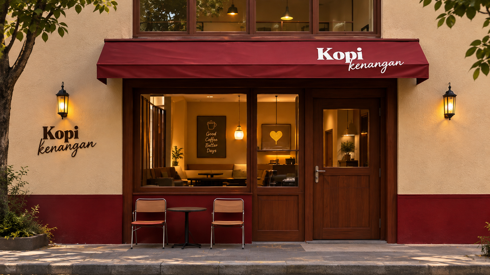
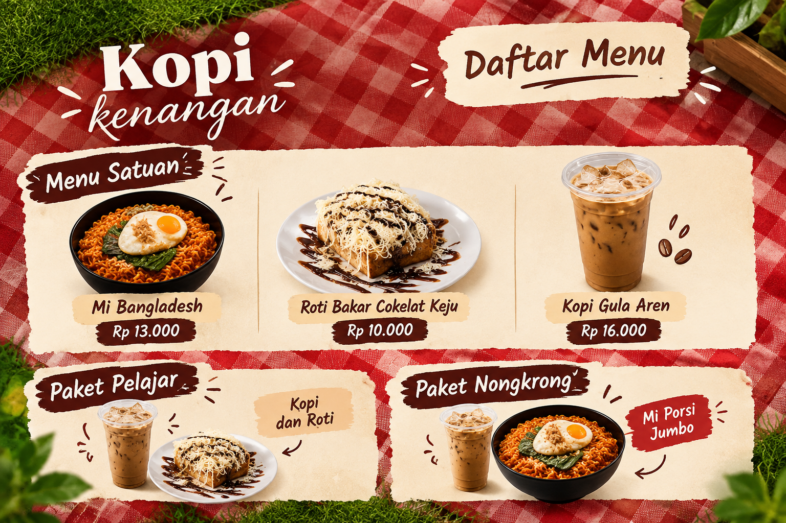

Lewati ke konten utama
Kopi Kenangan
Beranda
Tentang Kami
Kontak Singkat
Produk
Galeri
Galeri Kopi Kenangan
Sekilas suasana toko dan pilihan menu favorit pelanggan.
Media Usaha

Lokasi Kopi Kenangan, nyaman untuk singgah dan bersantai.

Daftar menu lengkap beserta paket hemat pilihan.